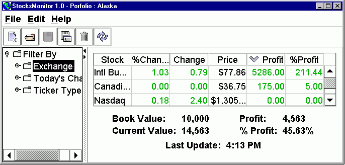

Pautas para la Apariencia
Here's an illustration of a theme created for people with low vision:

Changing theme is accomplished like so:
package myapp.ui; import javax.swing.*; import javax.swing.plaf.metal.*; final class UpdateTheme { void update(MetalTheme aTheme, JFrame aFrame){ MetalLookAndFeel.setCurrentTheme(aTheme); try { UIManager.setLookAndFeel(new MetalLookAndFeel()); } catch ( UnsupportedLookAndFeelException ex ){ System.out.println("Cannot set new Theme for Java Look and Feel."); } SwingUtilities.updateComponentTreeUI(aFrame); } }Defining Themes
Here, the
Theme
class defines the set of
MetalTheme
objects available to the application.
package hirondelle.stocks.util.ui; import javax.swing.plaf.metal.*; import javax.swing.plaf.basic.BasicBorders; import javax.swing.border.*; import javax.swing.plaf.*; import javax.swing.*; import java.awt.*; import java.util.*; /** * Defines all themes which can allow the user to customize the Java Look and Feel. * * <P>This application uses only the cross-platform Java Look-and-Feel, and never * attempts to adapt to the native look-and-feel (Windows, Metal, Mac). */ public final class Theme { /* * Implementation Note: * This item has not been converted to an enum class, since it * contains so many data-related settings. */ /** * A theme identical to the default Java look-and-feel, but whose name * is "Default" instead of the cryptic "Steel", and which provides a * <tt>toString</tt> method (required if <tt>Theme</tt> objects * passed to a combo box). Used as the base class for all other themes * used in this application. */ public static final MetalTheme DEFAULT = new Default(); /** * Much like {@link #DEFAULT}, but uses some blue-green colors. */ public static final MetalTheme AQUA = new Aqua(); /** * Differs from {@link #DEFAULT} only in font sizes. */ public static final MetalTheme LARGE_FONT = new LargeFont(); /** * Large fonts, and high contrast black and white colors. * * <P>This is an amalgam of two example themes from the JDK swing examples ; there * is apparently no recommended standard for a low-vision theme. */ public static final MetalTheme LOW_VISION = new LowVision(); /** * Convert <tt>aText</tt> into its corresponding <tt>Theme</tt> object, * if possible. * * @param aText possibly-null text which may map to a Theme. * @return null if <tt>aText</tt> is null, else try to match to a * known <tt>Theme</tt>. * @throws IllegalArgumentException if <tt>aText</tt> cannot be * matched to a known theme. */ public static MetalTheme valueOf(String aText) { if (aText == null) return null; for(MetalTheme theme: VALUES){ if (aText.endsWith(theme.getName())){ return theme; } } throw new IllegalArgumentException("Cannot parse into Theme object:" + aText); } /** * Return true if <tt>aTheme</tt> uses a larger font than the default; this is the * case only for <tt>LARGE_FONT</tt> and <tt>LOW_VISION</tt>. * * <P>Themes with large font sizes need particular care, as their use may * require changes outside those provided through * <tt>SwingUtilities.updateComponentTreeUI</tt>. */ public static boolean hasLargeFont(MetalTheme aTheme) { return aTheme == LARGE_FONT || aTheme == LOW_VISION; } private static final MetalTheme[] fValues = { DEFAULT, AQUA, LARGE_FONT, LOW_VISION }; /**Allows user to iterate over all elements of this enumeration. */ public static final java.util.List<MetalTheme> VALUES = Collections.unmodifiableList(Arrays.asList(fValues) ); private static final String fDEFAULT_NAME = "Default"; private static final String fAQUA_NAME = "Aqua"; private static final String fLARGE_FONT_NAME = "Large Font"; private static final String fLOW_VISION_NAME = "Low Vision"; /* * All items below are private nested classes which define the various * themes. */ private static class Default extends DefaultMetalTheme { public String getName(){ return fName; } /** * This override is provided such that Theme objects can * be directly passed to JComboBox, instead of Strings. (This would * not be necessary if getName had been named toString instead). */ @Override public final String toString() { return getName(); } private final String fName = fDEFAULT_NAME; } private static class Aqua extends Default { public String getName(){ return fName; } protected ColorUIResource getPrimary1() { return fPrimary1; } protected ColorUIResource getPrimary2() { return fPrimary2; } protected ColorUIResource getPrimary3() { return fPrimary3; } private final String fName = fAQUA_NAME; private final ColorUIResource fPrimary1 = new ColorUIResource(102, 153, 153); private final ColorUIResource fPrimary2 = new ColorUIResource(128, 192, 192); private final ColorUIResource fPrimary3 = new ColorUIResource(159, 235, 235); } private static class LargeFont extends Default { public String getName(){ return fName; } //fonts are larger than defaults public FontUIResource getControlTextFont() { return fControlFont;} public FontUIResource getSystemTextFont() { return fSystemFont;} public FontUIResource getUserTextFont() { return fUserFont;} public FontUIResource getMenuTextFont() { return fControlFont;} public FontUIResource getWindowTitleFont() { return fWindowTitleFont;} public FontUIResource getSubTextFont() { return fSmallFont;} private final String fName = fLARGE_FONT_NAME; private final FontUIResource fControlFont = new FontUIResource("Dialog", Font.BOLD, 18); private final FontUIResource fSystemFont = new FontUIResource("Dialog", Font.PLAIN, 18); private final FontUIResource fWindowTitleFont = new FontUIResource( "Dialog", Font.BOLD,18 ); private final FontUIResource fUserFont = new FontUIResource("SansSerif", Font.PLAIN, 18); private final FontUIResource fSmallFont = new FontUIResource("Dialog", Font.PLAIN, 14); } private static class LowVision extends LargeFont { public String getName() { return fName; } //colors are mostly black and white public ColorUIResource getPrimaryControlHighlight() { return fPrimaryHighlight;} public ColorUIResource getControlHighlight() { return super.getSecondary3(); } public ColorUIResource getFocusColor() { return getBlack(); } public ColorUIResource getTextHighlightColor() { return getBlack(); } public ColorUIResource getHighlightedTextColor() { return getWhite(); } public ColorUIResource getMenuSelectedBackground() { return getBlack(); } public ColorUIResource getMenuSelectedForeground() { return getWhite(); } public ColorUIResource getAcceleratorForeground() { return getBlack(); } public ColorUIResource getAcceleratorSelectedForeground() { return getWhite(); } public void addCustomEntriesToTable(UIDefaults aTable) { super.addCustomEntriesToTable(aTable); aTable.put( "ToolTip.border", fBlackLineBorder); aTable.put( "TitledBorder.border", fBlackLineBorder); aTable.put( "ScrollPane.border", fBlackLineBorder); aTable.put( "TextField.border", fTextBorder); aTable.put( "PasswordField.border", fTextBorder); aTable.put( "TextArea.border", fTextBorder); aTable.put( "TextPane.border", fTextBorder); aTable.put( "EditorPane.border", fTextBorder); aTable.put( "InternalFrame.closeIcon", MetalIconFactory.getInternalFrameCloseIcon(fInternalFrameIconSize) ); aTable.put( "InternalFrame.maximizeIcon", MetalIconFactory.getInternalFrameMaximizeIcon(fInternalFrameIconSize) ); aTable.put( "InternalFrame.iconifyIcon", MetalIconFactory.getInternalFrameMinimizeIcon(fInternalFrameIconSize) ); aTable.put( "InternalFrame.minimizeIcon", MetalIconFactory.getInternalFrameAltMaximizeIcon(fInternalFrameIconSize) ); aTable.put( "ScrollBar.width", fScrollBarWidth ); } protected ColorUIResource getPrimary1() { return fPrimary1; } protected ColorUIResource getPrimary2() { return fPrimary2; } protected ColorUIResource getPrimary3() { return fPrimary3; } protected ColorUIResource getSecondary2() { return fSecondary2; } protected ColorUIResource getSecondary3() { return fSecondary3; } private static final String fName = fLOW_VISION_NAME; private final ColorUIResource fPrimary1 = new ColorUIResource(0, 0, 0); private final ColorUIResource fPrimary2 = new ColorUIResource(204, 204, 204); private final ColorUIResource fPrimary3 = new ColorUIResource(255, 255, 255); private final ColorUIResource fPrimaryHighlight = new ColorUIResource(102,102,102); private final ColorUIResource fSecondary2 = new ColorUIResource(204, 204, 204); private final ColorUIResource fSecondary3 = new ColorUIResource(255, 255, 255); private final Border fBlackLineBorder = new BorderUIResource(new LineBorder(getBlack())); private final Object fTextBorder = new BorderUIResource( new CompoundBorder(fBlackLineBorder, new BasicBorders.MarginBorder()) ); private final int fInternalFrameIconSize = 30; private final Integer fScrollBarWidth = new Integer(25); } }